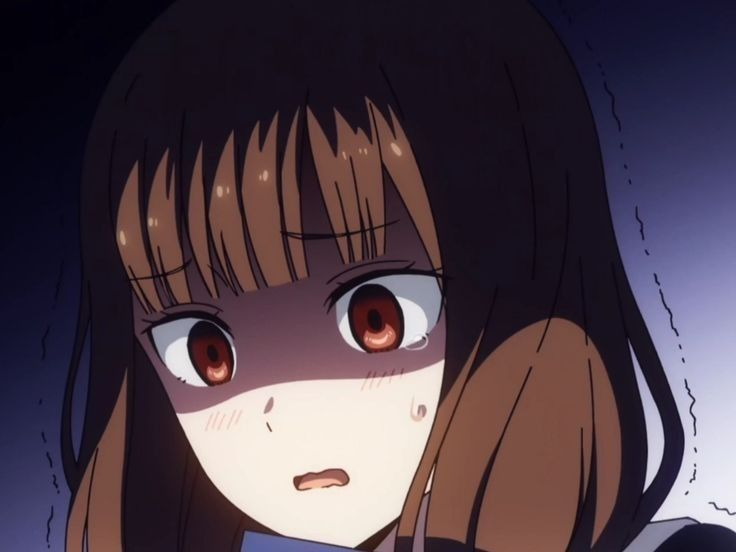

Anime
Fullmetal Alchemist tendrá un nuevo proyecto por su vigésimo aniversario
Square Enix inauguró nuevo sitio web para celebrar el vigésimo aniversario del manga Fullmetal Alchemist
de Hiromu Arakawa. Este nuevo sitio anunciará nuevos proyectos para el aniversario en el futuro y también
muestra una imagen del personaje Scar y una cuenta atrás que finalizará el próximo 2 de marzo.
Por otra parte, Arakawa comenzó la publicación del manga en la revista Monthly Shonen Gangan de la editorial
Square Enix en julio de 2001 y la finalizó en junio de 2010. La editorial recopiló la obra en un total de
veintisiete volúmenes. El manga fue adaptado al anime en dos ocasiones, el primero en 2003 y titulado
Fullmetal Alchemist; y el segundo en 2009 y titulado Fullmetal Alchemist Brotherhood.
Leer más...

Cultura Otaku
Autores que fallecieron antes de poder terminar su obra.
Todos los fanáticos se afligen al darse cuenta de que su anime y manga favoritos ya no continuarán,
ya que la persona detrás de la obra maestra ha fallecido demasiado pronto. Es como golpear el corazón
de alguien con dos piedras: La historia que sigues cada semana ya no llegará a su conclusión y el pobre
autor murió, lo que por sí solo es deprimente. ¿Qué otro autor recuerdas que haya fallecido antes de
terminar su manga o novela ligera?
Leer más...

Mercancías
Kaguya-sama: Love is War. Miko Iino inspira una linda figura a escala
La compañía fabricante Animaru! anunció el lanzamiento de una figura a escala 1/7 basada en el personaje
Miko Iino de la franquicia multimedia de Kaguya-sama: Love is War (Kaguya-sama wa Kokurasetai: Tensai-tachi
no Renai Zunousen) para julio de 2022.
El pedestal está basado en el color de la imagen de Miko, el naranja, y se ha diseñado para que se parezca a
la alfombra de la sala del consejo estudiantilLa figura tiene una altura de aproximadamente 210 mm, tendrá
un precio de 15,400 yenes (alrededor de 133 dólares) y se encuentra disponible para reservación en el sitio
oficial del distribuidor en el periodo comprendido del 10 de febrero al 10 de abril de este año.
Leer más...

Recomendaciones
Para las tardes, despues de terminar los deberes.
Si buscas animes que ver, después de ingnorar por enesima vez tu lista de "Animes por ver", esta sección
es para ti, dónde vas a encontrar desde animes Shoujo hasta animes Ecchi, para todos gustos y colores, claro,
sin olvidar una pequeña reseña para que puedas entender que es lo que vas a ver.
Leer más...